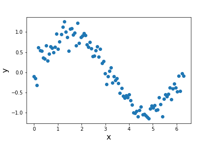
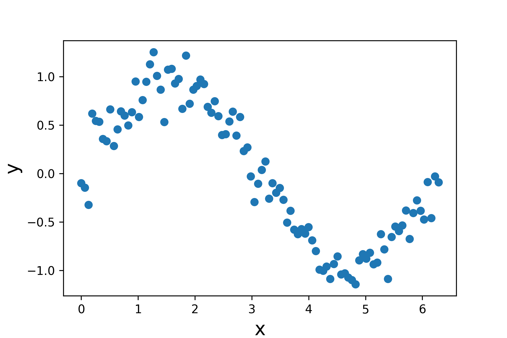
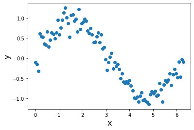

Publication Quality Plots and Errorbars
Contents
Publication Quality Plots and Errorbars¶
Increase Plot Quality¶
import numpy as np
import matplotlib.pyplot as plt
# %matplotlib notebook -- useful for interactive plotting!
# %matplotlib inline -- returns us back to normal
# simulate some data
x = np.linspace(0,2*np.pi,100)
y = np.sin(x)
# assign measurements errors to our data
yerr = np.random.uniform(0.1,0.2,len(x))
xerr = 0.1*np.ones_like(yerr)
# RESAMPLE our data assuming Gaussian distribution w/ mu=0,sd=yerr
y = np.random.normal(y,yerr)
Default Matplotlib Plot¶
plt.figure()
plt.scatter(x,y,)
plt.xlabel('x',fontsize=16)
plt.ylabel('y',fontsize=16)
plt.savefig('test_figure.png')
plt.show()

There are some problems with this:
1. The figure is low resolution, by default. If you naively save this figure, it will show up very grainy and, frankly, ugly, in your reports. Increase resolution with ``dpi=’’.¶
plt.figure()
plt.scatter(x,y,)
plt.xlabel('x',fontsize=16)
plt.ylabel('y',fontsize=16)
plt.savefig('test_figure_hires.png',dpi=300)
plt.show()

If we compare how these both look:
Low-Resolution: 
Increased DPI: 
2. The default is to save as a .png, which is by default rasterized. It is often preferred to save figures as vector graphics, which are defined in the Cartesian plane and not in terms of pixels. This allows for graphics to be scaled up and down without loss of resolution.¶
plt.figure()
plt.scatter(x,y,)
plt.xlabel('x',fontsize=16)
plt.ylabel('y',fontsize=16)
plt.savefig('test_figure_hires.eps') # eps file format
plt.show()

Error Bar Plotting¶
The art of making a good plot gets even more difficult when you have errors. Here are some tips and tutorials for how to do this in Matplotlib:
style = dict(
# general properties
linestyle='none', # do not connect points
# points
marker='o', # marker shape
ms=4, # marker size
lw=1, # line width
markerfacecolor='crimson', #color of marker faces
markeredgecolor='k', # color of marker edges
markeredgewidth=0.5, # width of the edge lines
# errors
ecolor='k', # color of errorbars
elinewidth=0.5, #errorbar line width
capsize=1, # by default, caps are off: this specifies size
# label
label='data' # label for legend
)
plt.figure(dpi=125)
plt.errorbar(x=x,y=y,
xerr=xerr,yerr=yerr,
**style)
plt.xlabel('x',fontsize=16)
plt.ylabel('y',fontsize=16)
plt.legend(loc='upper right')
plt.savefig('final_figure.eps')
plt.show()
The PostScript backend does not support transparency; partially transparent artists will be rendered opaque.
The PostScript backend does not support transparency; partially transparent artists will be rendered opaque.
The xerr, yerr errorbar sizes:
scalar: Symmetric +/- values for all data points.
shape(N,): Symmetric +/-values for each data point.
shape(2, N): Separate - and + values for each bar. First row contains the lower errors, the second row contains the upper errors.
None: No errorbar.